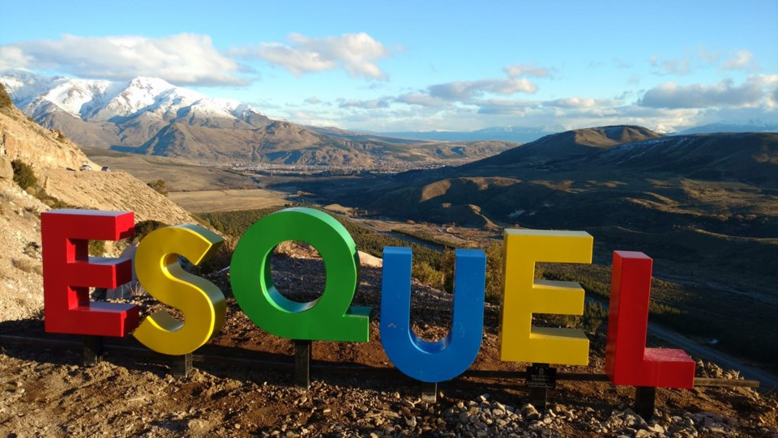

Esquel es una ciudad localizada en el noroeste de la provincia del Chubut, que se encuentra en el departamento Futaleufú, del cual es cabecera. Es el centro de servicios más importante de la cordillera chubutense. Posee como recurso economico el turismo siendo los más destacado el parque nacional Los Alerces, el centro de esqui La hoya y el viejo expreso patagonico "La trochita."